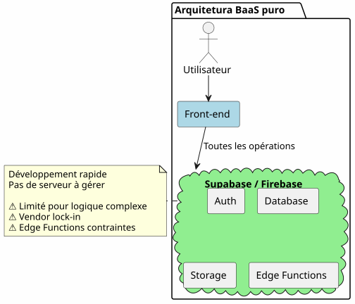
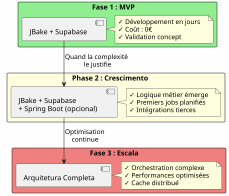
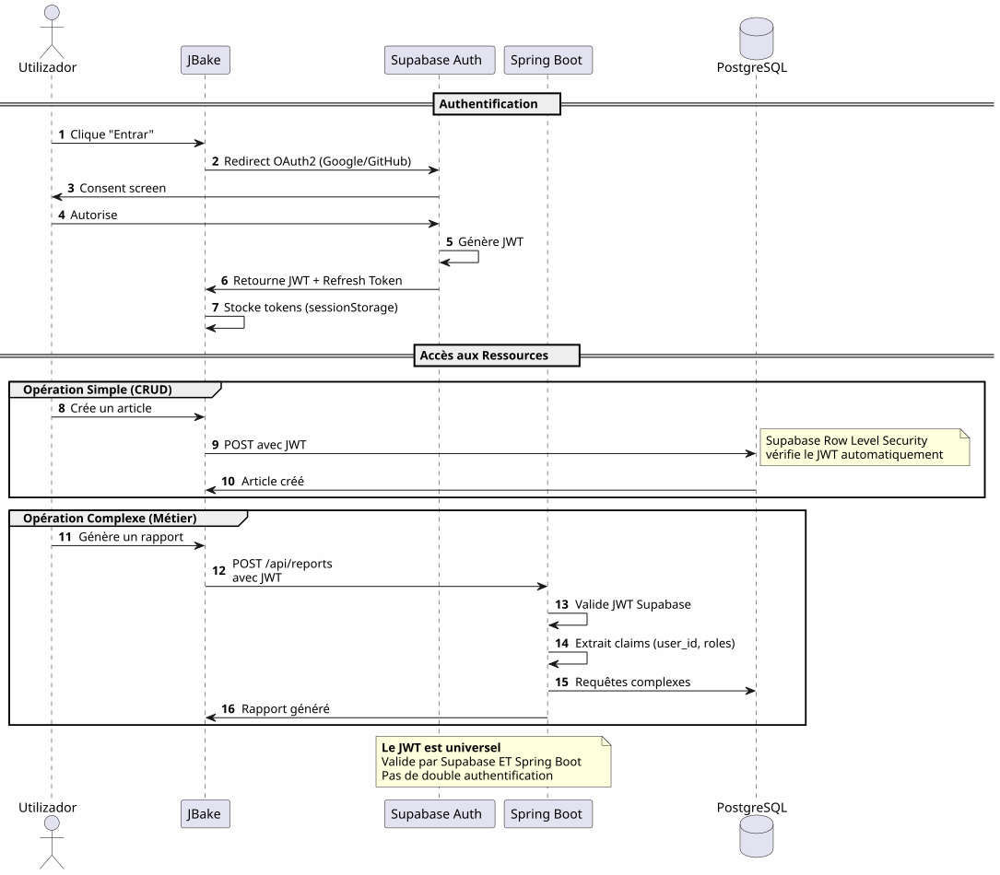
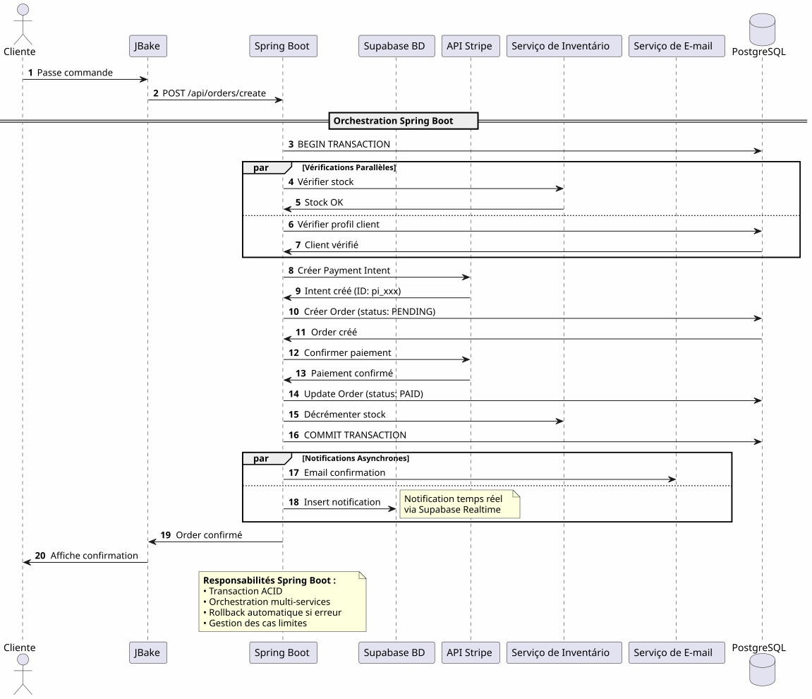
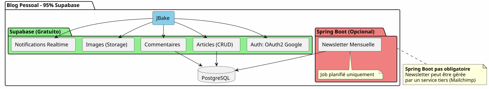

Arquitetura Híbrida: O Melhor dos Dois Mundos com Supabase e Spring Boot
Publié le 14 January 2026
Em vez de escolher entre a simplicidade do Supabase e a potência do Spring Boot, por que não combinar os dois? Descubra uma arquitetura híbrida que aproveita o melhor de cada tecnologia.
- toc
-
[]
O Falso Dilema da Arquitetura Moderna
Ao construir uma aplicação moderna com um frontend estático, frequentemente nos deparamos com uma escolha binária:
-
Apostar tudo numa solução Backend-as-a-Service(Supabase, Firebase) - simples mas limitada
-
Construir um backend completo(Spring Boot, Node.js) - poderoso mas complexo
Esta escolha é um falso dilema. A arquitetura híbrida propõe um terceiro caminho: utilizar cada tecnologia onde ela se destaca
Visão Arquitetônica
A Arquitetura Tradicional : Monolítica
Nessa abordagem, até mesmo as operações mais simples (leitura de um artigo, criação de um comentário) precisam passar pelo seu backend. Você paga o custo da complexidade desde o primeiro dia.
A Arquitetura BaaS: Todo Delegado

Do contrário, delegar tudo a um BaaS é sedutor no início, mas mostra rapidamente seus limites assim que a lógica de negócios se complexifica.
A Arquitetura Híbrida : Separação das Responsabilidades
A arquitetura híbrida separa claramente as responsabilidades de acordo com a complexidade e a natureza das operações.
Princípios de Design
Princípio 1 : Começar Simples, Evoluir Inteligentemente

Não construa o Spring Boot se você não precisar.Comece com o Supabase, adicione o Spring Boot quando a complexidade justificar.
Princípio 2: Separação por natureza da operação

Princípio 3 : Uma Única Fonte de Verdade
Ao compartilhar a mesma instância PostgreSQL, o Supabase e o Spring Boot trabalham nos mesmos dados sem sincronização complexa.
Orquestração dos Fluxos
Flux 1 : Autenticação Centralizada

ponto-chave: Um único processo de autenticação, um único JWT, utilizável em qualquer lugar.
Flux 2 : Orquestração de um Processo de Negócio Complexo

O que o Spring Boot trazOrquestração fiável de processos complexos envolvendo vários sistemas com garantia transacional.
Flux 3 : Trabalhos Agendados e Sincronizações
Failed to generate image: PlantUML preprocessing failed: [From <input> (line 4) ] @startuml skinparam backgroundColor #FEFEFE participant "Agendador ^^^^^ Syntax Error? (Assumed diagram type: sequence) @startuml skinparam backgroundColor #FEFEFE participant "Agendador (Spring Boot)" as scheduler participant "Serviço de Relatório" as report participant "PostgreSQL" as db participant "API externa" as api participant "Serviço de e‑mail" as email participant "Supabase Storage" as storage == Job Quotidien : 2h00 == activate scheduler scheduler -> report : Déclenche génération rapport activate report report -> db : Récupère données\ndes dernières 24h db -> report : Dataset report -> report : Calculs & Agrégations report -> report : Génération PDF report -> storage : Upload PDF storage -> report : URL publique report -> email : Envoie aux admins\navec lien PDF deactivate report == Job Hebdomadaire : Dimanche 3h00 == scheduler -> report : Synchronisation externe activate report report -> api : Fetch données externes api -> report : Nouvelles données report -> db : Mise à jour tables report -> db : Nettoyage données obsolètes deactivate report == Job Mensuel : 1er du mois == scheduler -> report : Facturation activate report report -> db : Liste clients actifs report -> report : Calcul montants report -> api : Génération factures (Stripe) report -> email : Envoi factures deactivate report deactivate scheduler note right of scheduler **Impossible avec Supabase seul** Edge Functions non adaptées pour jobs longs et récurrents end note @enduml
O que o Spring Boot traz: Trabalhos agendados confiáveis com gerenciamento de estado, retry automático e execução garantida.
Matriz de Decisão
Quando usar Supabase?

Quando usar o Spring Boot?

Exemplos de Arquitetura por Tipo de Projeto
Blog / Portfólio

Veredicto: 100% Supabase é mais que suficiente.
Aplicação SaaS
Veredito: Arquitetura híbrida necessária. Supabase para o essencial, Spring Boot para a parte crítica (pagamentos, faturamento).
e-commerce
veredicto: Spring Boot indispensável. Supabase para autenticação e catálogo apenas.
Estratégia de Migração Progressiva

Custos e Considerações Operacionais
Estrutura dos Custos
Failed to generate image: PlantUML preprocessing failed: [From <input> (line 7) ]
@startuml
skinparam backgroundColor #FEFEFE
package "Custos Mensais Estimados" {
rectangle "Fase MVP
(0-1000 usuários)" #LightGreen {
^^^^^
Syntax Error? (Assumed diagram type: activity)
@startuml
skinparam backgroundColor #FEFEFE
package "Custos Mensais Estimados" {
rectangle "Fase MVP
(0-1000 usuários)" #LightGreen {
[JBake (GitHub Pages): 0€]
[Supabase: 0€]
[Spring Boot: N/A]
note bottom: **Total: 0€/mois**
}
rectangle "Fase de Crescimento\n(1k-10k utilizadores)" #LightYellow {
[JBake (GitHub Pages): 0€]
[Supabase: 0€]
[Spring Boot (Cloud Run): 20-50€]
[PostgreSQL (si séparé): 0-30€]
note bottom: **Total: 20-80€/mois**
}
rectangle "Escala da Fase
(10k-100k usuários)" #LightCoral {
[JBake (Netlify Pro): 19€]
[Supabase Pro: 25€]
[Spring Boot (instances multiples): 100-300€]
[Redis Cache: 20-50€]
[Monitoring: 20€]
note bottom: **Total: 184-414€/mois**
}
}
note right of "Escala da Fase
(10k-100k usuários)"
À ce stade, les revenus
justifient largement les coûts
end note
@enduml
Responsabilidades Operacionais
Conclusão: O Equilíbrio Perfeito
A arquitetura híbrida Supabase + Spring Boot não é um compromisso, é umasinergia.
Os princípios a reter

Quando escolher esta arquitetura?
✅ Esta arquitetura é ideal se :
-
Você quer começar rapidamente (MVP em dias, não em meses)
-
Você antecipa um crescimento da complexidade de negócio
-
Você deseja minimizar os custos iniciais
-
Você gosta de PostgreSQL e quer uma fonte de verdade única
-
Você aprecia Kotlin e as Coroutines para o código de negócio
-
Você quer evitar o vendor lock-in total
❌ Esta arquitetura NÃO é adequada se:
-
Seu projeto é simples e permanecerá assim (blog pessoal → 100% Supabase basta)
-
Você já tem uma stack de backend estabelecida que você domina.
-
Você prefere um monolito tradicional
-
Você precisa de .NET, Python, ou outra linguagem do lado do backend
Visão Geral Final
Failed to generate image: PlantUML preprocessing failed: [From <input> (line 35) ]
@startuml
skinparam backgroundColor #FEFEFE
package "Arquitetura Híbrida Completa" {
actor "Usuários" as users
rectangle "Frontend (Estático)" #SkyBlue {
[JBake / GitHub Pages]
note right: Gratuit, CDN global
}
rectangle "Backend Simples (Supabase)" #LightGreen {
[Auth OAuth2]
[CRUD APIs]
[Storage]
[Realtime]
note right
Gratuit jusqu'à 50k users
Zéro configuration serveur
end note
}
rectangle "Backend de Negócio (Spring Boot)" #Coral {
[Orchestration]
[Jobs Planifiés]
[Intégrations]
[Transactions]
note right
Activé uniquement
si nécessaire
end note
}
database "PostgreSQL
^^^^^
Syntax Error? (Assumed diagram type: component)
@startuml
skinparam backgroundColor #FEFEFE
package "Arquitetura Híbrida Completa" {
actor "Usuários" as users
rectangle "Frontend (Estático)" #SkyBlue {
[JBake / GitHub Pages]
note right: Gratuit, CDN global
}
rectangle "Backend Simples (Supabase)" #LightGreen {
[Auth OAuth2]
[CRUD APIs]
[Storage]
[Realtime]
note right
Gratuit jusqu'à 50k users
Zéro configuration serveur
end note
}
rectangle "Backend de Negócio (Spring Boot)" #Coral {
[Orchestration]
[Jobs Planifiés]
[Intégrations]
[Transactions]
note right
Activé uniquement
si nécessaire
end note
}
database "PostgreSQL
Fonte Única da Verdade" as db #LightGray
users --> [JBake / GitHub Pages]
[JBake / GitHub Pages] --> [Auth OAuth2]
[JBake / GitHub Pages] --> [CRUD APIs]
[JBake / GitHub Pages] --> [Storage]
[JBake / GitHub Pages] --> [Realtime]
[JBake / GitHub Pages] --> [Orchestration]
[Auth OAuth2] --> db
[CRUD APIs] --> db
[Orchestration] --> db
[Jobs Planifiés] --> db
[Intégrations] --> db
}
note bottom of db
**Une seule base, deux consommateurs**
• Supabase pour le simple
• Spring Boot pour le complexe
• Aucune synchronisation requise
end note
@enduml
O Melhor dos Dois Mundos
Esta arquitetura lhe dá:
🚀 A Velocidade do Supabase
-
Início em horas, não em semanas
-
Autenticação OAuth2 em poucos cliques
-
APIs REST geradas automaticamente
-
Zero configuração de servidor
�💪 O Poder do Spring Boot
-
Kotlin e Coroutines para código assíncrono elegante
-
Orquestração de processos de negócio complexos
-
Jobs agendados confiáveis
-
Transações ACID garantidas
-
Ecossistema Spring completo
💰 A Economia Progressiva
-
0€ para iniciar e validar
-
Custos que acompanham o crescimento
-
Não há sobre-engenharia prematura
�🎯 A Flexibilidade Arquitetônica
-
Migração progressiva sem reformulação
-
Adicionar Spring Boot apenas se necessário
-
Sem bloqueio total de fornecedor
-
arquitetura evolutiva
Para Ir Mais Longe
Recursos Técnicos
Documentação Supabase :
Documentação Spring Boot:
Artigos Complementares:
-
Proteção das APIs com JWT
-
Otimização de desempenho PostgreSQL
-
Padrões de migração progressiva
-
Gestão de erros em arquitetura distribuída
Casos de Uso Reais
Esta arquitetura híbrida é utilizada com sucesso em :
-
SaaS B2B: Autenticação Supabase, faturamento Spring Boot
-
Mercados: Catálogo Supabase, transações Spring Boot
-
Plataformas de conteúdo: Artigos Supabase, analítica Spring Boot
-
Ferramentas internas: CRUD Supabase, fluxos de trabalho Spring Boot
Checklist de partida
Fase 1 - Fundações (Semana 1)
-
Criar conta Supabase - [ ] Configurar projeto PostgreSQL - [ ] Ativar Auth (Google, GitHub) - [ ] Definir esquema inicial - [ ] Configurar Row Level Security - [ ] Testar APIs desde JBake
Fase 2 - MVP (Semana 2-3)
-
Implementar páginas principais - [ ] Integrar autenticação OAuth2 - [ ] Criar formulários CRUD - [ ] Configurar Storage para arquivos - [ ] Implantar no GitHub Pages - [ ] Testar em condições reais
Fase 3 - Evolução (Conforme as necessidades)
-
Identificar necessidades de lógica complexa - [ ] Criar projeto Spring Boot se necessário - [ ] Configurar validação JWT Supabase - [ ] Conectar ao PostgreSQL Supabase - [ ] Migrar funcionalidades complexas - [ ] Implementar trabalhos agendados - [ ] Implementar Spring Boot (Cloud Run, etc.)
Anti-Padrões a Evitar
�❌ Não fazer:
-
Duplicar os dados entre Supabase e Spring Boot
-
Criar duas bases PostgreSQL separadas
-
Codifique a autenticação você mesmo
-
Utilizar Spring Boot para CRUD simples
-
Sobre-arquitetar desde o início
-
Ignorar a Segurança de Nível de Linha do Supabase
Fazer de preferência :
-
Compartilhar um único banco de dados PostgreSQL
-
Deixe o Supabase gerenciar a autenticação
-
Usar o Spring Boot apenas pela complexidade
-
Começar simples, evoluir gradualmente
-
Aproveitar as forças de cada tecnologia
-
Proteger com RLS no nível da base de dados
Perspectivas de Evolução
Adição de Novas Capacidades
Escalonamento Horizontal
Quando seu aplicativo cresce, a arquitetura híbrida escala naturalmente:
Supabase :
-
Escala automaticamente até milhões de operações
-
Réplicas de leitura para desempenho de leitura
-
Point-in-time recovery para segurança
Spring Boot:
-
Múltiplas instâncias atrás do load balancer
-
O design stateless facilita o escalonamento horizontal
-
Kubernetes para orquestração se necessário
PostgreSQL :
-
Particionamento para tabelas volumosas
-
Pooling de conexões (PgBouncer)
-
Sharding é realmente necessário (raro)
Testemunhos Arquitetônicos
Startup SaaS (50k utilizadores)
_ Começamos 100% Supabase. Aos 5k usuários, adicionamos Spring Boot apenas para a cobrança Stripe e os relatórios mensais. Um ano depois, 80% das nossas operações ainda passam pelo Supabase. Spring Boot cuida apenas da parte crítica. Essa separação nos permitiu escalar sem reformulação. _
Plataforma E-learning (10k usuários)
_ A autenticação OAuth2 da Supabase nos fez ganhar 3 semanas de desenvolvimento. As APIs auto-geradas gerenciam todo o nosso catálogo de cursos. Spring Boot serve apenas para os certificados PDF e os e-mails de progresso. Arquitetura simples, manutenível, escalável. _
Marketplace B2B (3k utilizadores)
_ Spring Boot gere as transações entre compradores e vendedores (crítico). Supabase gere o resto: perfis, mensagens em tempo real, documentos. O fato de compartilharem o mesmo banco de dados PostgreSQL nos evita qualquer sincronização complexa. Melhor escolha arquitetônica que já fizemos. _
Síntese: Um Paradigma Arquitetônico Moderno
A arquitetura híbrida Supabase + Spring Boot representa um novo paradigma:especialização arquitetônica.
Failed to generate image: PlantUML preprocessing failed: [From <input> (line 20) ]
@startuml
skinparam backgroundColor #FEFEFE
rectangle "Paradigma Antigo" #LightCoral {
card "Tudo no Backend" {
[Auth]
[CRUD]
[Logique Métier]
[Jobs]
[Storage]
[Realtime]
}
note bottom
Complexité maximale
dès le jour 1
end note
}
rectangle "Novo Paradigma" #LightGreen {
card "Supabase
^^^^^
Syntax Error? (Assumed diagram type: component)
@startuml
skinparam backgroundColor #FEFEFE
rectangle "Paradigma Antigo" #LightCoral {
card "Tudo no Backend" {
[Auth]
[CRUD]
[Logique Métier]
[Jobs]
[Storage]
[Realtime]
}
note bottom
Complexité maximale
dès le jour 1
end note
}
rectangle "Novo Paradigma" #LightGreen {
card "Supabase
(Conveniência)" {
[Auth]
[CRUD Simple]
[Storage]
[Realtime]
}
card "Spring Boot
(Diferenciação)" {
[Logique Métier]
[Jobs]
[Intégrations]
}
note bottom
Complexité progressive
ajoutée seulement si nécessaire
end note
}
[Ancien Paradigme] -right-> [Nouveau Paradigme] : Évolution
@enduml
O princípio fundamental:Não construa o que já existe como serviço. Concentre-se no que diferencia sua aplicação.
A Regra dos 80/20
Na maioria das aplicações :
-
80% das operaçõessão CRUD padrão → Supabase
-
20% das operaçõesnecessitam de lógica de negócio → Spring Boot
Esta regra natural justifica a arquitetura híbrida.
Conclusão Final
A arquitetura híbrida não é um compromisso técnico, é umadecisão estratégica.
Ela permite que você:
-
�✅ Comece rapidamente com um MVP funcional
-
�✅ Validar seu mercado sem investimento pesado
-
✅ Evoluir gradualmente quando a complexidade o exige
-
Domine seus custos em cada etapa
-
✅ Explorar o melhor de cada tecnologia
-
�✅ Evitar a sobreengenharia prematura
-
✅ Manter a flexibilidade para o futuro
Ela representa :
-
�🎯Pragmatismo: Cada tecnologia onde ela se destaca
-
�🚀velocidade: Tempo de lançamento mínimo
-
�💰EconomiaCustos alinhados ao valor
-
�🔮Escalabilidade: Arquitetura que cresce com você
-
�🛡️Robustez: Serviços testados e confiáveis
Seu Próximo Passo
Se essa arquitetura fala com você, aqui está por onde começar:
-
Crie uma conta Supabase(gratuito)
-
Defina seu esquema de dados mínimo
-
Configure a autenticação OAuth2
-
Crie sua primeira página JBake que consome a API
-
Implante no GitHub Pages
Você terá um MVP funcional emalguns dias.
Spring Boot virá naturalmente quando você precisar. Não antes.
A arquitetura híbrida é a arte de construir exatamente o que é necessário, quando é necessário.
Bom desenvolvimento! 🚀
Compartilhe este artigo se você pensar que pode ajudar outros desenvolvedores a fazer as boas escolhas arquitetônicas.